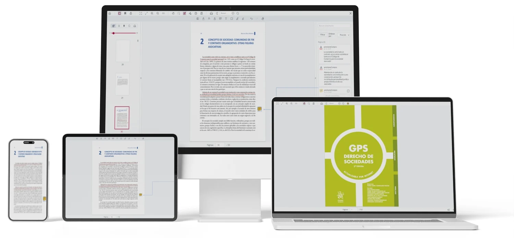
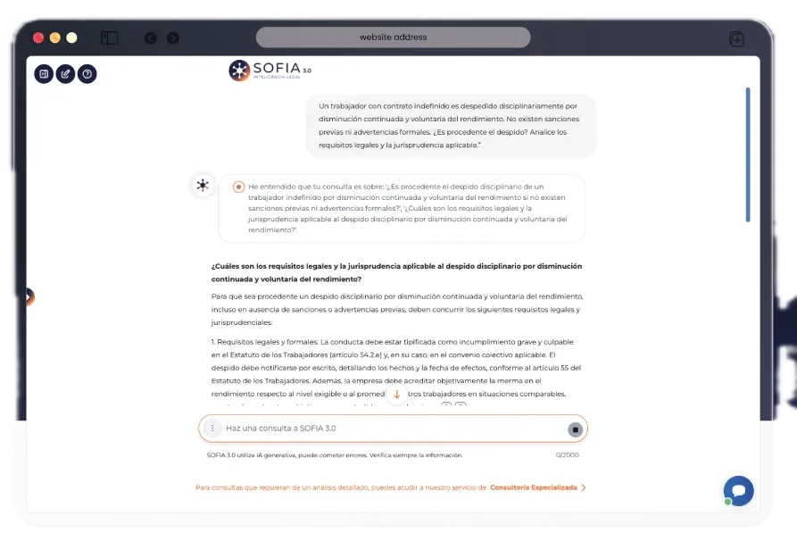

La biblioteca jurídica digital de Tirant, siempre al alcance de tu mano
Todo el fondo de la editorial jurídica más prestigiosa según el CSIC, actualizado y en un solo sitio. Busca, lee, anota y cita sin salir de la biblioteca, desde cualquier dispositivo.
¿Tienes el libro, pero no a mano cuando lo necesitas?
Sí, y no tiene por qué seguir así: ese tiempo debería ser para el caso, no para buscar.
No recuerdas en qué obra estaba esa cita
Buscas una referencia concreta y repasas estanterías o PDFs sueltos para encontrarla de nuevo.
Subrayas en papel y luego no lo encuentras
La nota queda en un libro, en un cuaderno o en un documento aparte, nunca en el mismo sitio.
Rehaces la cita bibliográfica a mano
Cada vez que citas una obra, reconstruyes el formato exacto desde cero.
En Tirant lo sabemos. Por eso creamos Biblioteca Virtual.
Cada búsqueda a mano son minutos que no dedicas al caso.
Tirant ha creado Biblioteca Virtual: la herramienta que busca tus citas, guarda tus notas y genera tus referencias
Creada por la editorial jurídica y académica mejor valorada según el índice SPI del CSIC. Nadie conoce mejor este fondo.
Encuentra, anota y cita. Todo al instante

Búsqueda avanzada
Busca en toda la biblioteca o dentro de cada libro, por título, autor, colección, materia o ISBN.
Notas y subrayados
Marcadores, notas y subrayados quedan en el libro; tus listas de lectura y favoritos, en tu área personal.
Referencias y citas
Exporta la cita bibliográfica en el sistema de citación que uses, sin rehacerla a mano.
Empezar es sencillo
Pide información
Cuéntanos tu caso y te ayudamos a elegir entre acceso individual o institucional.
Entra fácilmente
Con tu usuario, tu institución o tu red de trabajo, como prefieras.
Busca, lee y anota
Trabaja directamente sobre tu biblioteca de Tirant, desde el primer día.
Así cambia tu día a día con tu biblioteca de Tirant
Lo que antes te costaba tiempo, ahora lo resuelves al momento.
No sé en qué obra estaba esa cita.
Escribes el término y buscas en toda la biblioteca, o por título, autor, colección, materia o ISBN.
Buscador avanzado · buscador interno dentro de cada libroSubrayo y anoto, pero luego no lo encuentro.
Notas, marcadores y subrayados quedan en el libro, y tus listas de lectura y favoritos en tu área personal.
Editor · personalizaciónRehago a mano las citas bibliográficas.
Exportas la cita en el sistema de citación que uses.
Referencias y citasNo siempre puedo leer con la pantalla delante.
Escuchas el libro con lectura en voz alta.
Audiolibros (lectura en voz alta)SOFIA 4.0
INTELIGENCIA ARTIFICIAL
Consulta con SOFIA sobre todo el fondo de Tirant
SOFIA comprende el contexto, relaciona contenidos y te ayuda a pasar de la consulta al análisis, con el fondo editorial de Tirant detrás.

Preguntas antes de decidir
¿Qué diferencia hay entre acceso individual e institucional?
El acceso individual está pensado para un único profesional; el institucional, para universidades, despachos o colegios profesionales con varios usuarios. Escríbenos para confirmar qué encaja con tu caso.
¿Cómo accedo a la biblioteca?
Con usuario y contraseña, mediante Single Sign-On de tu institución o por reconocimiento de IP, según el tipo de acceso contratado.
¿Puedo leer sin conexión?
El acceso requiere conexión a internet. Si necesitas lectura sin conexión para tu caso concreto, consúltanoslo al solicitar información.
¿Tengo los libros que ya compré en papel o en ebook?
Depende de tu suscripción y del título. Escríbenos con tu caso y te confirmamos qué contenido tienes disponible.
¿Cuántos usuarios simultáneos admite una licencia?
Varía según el tipo de licencia individual o institucional. Te lo detallamos al solicitar información.
¿Qué precio tiene?
El precio depende del tipo de acceso y del volumen de usuarios. Solicita información y te preparamos una propuesta.
¿SOFIA es fiable en sus respuestas y cita sus fuentes?
SOFIA trabaja sobre el fondo editorial de Tirant. Para el detalle de sus fuentes y límites de uso, consúltanoslo al solicitar información.
¿Cómo se actualiza el contenido?
El fondo está en continua actualización, con nuevas publicaciones de la editorial incorporadas de forma progresiva.